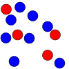

subitization

Definition: Subitizing is the rapid, accurate, and confident judgments of numbers performed for small numbers of items. The term was coined in 1949 by E. L. Kaufman et al., and is derived from the Latin adjective subitus (meaning "sudden") and captures a feeling of immediately knowing how many items lie within the visual scene, when the number of items present falls within the subitizing range. Sets larger than about four to five items cannot be subitized unless the items appear in a pattern with which the person is familiar (such as the six dots on one face of a die). Large, familiar sets might be counted one-by-one (or the person might calculate the number through a rapid calculation if they can mentally group the elements into a few small sets). A person could also estimate the number of a large set—a skill similar to, but different from, subitizing.
Source: Wikipedia
Wikipedia Page (Something wrong with this association? Let us know.)
Wikidata Page (Something wrong with this association? Let us know.)